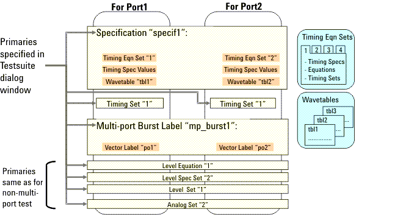
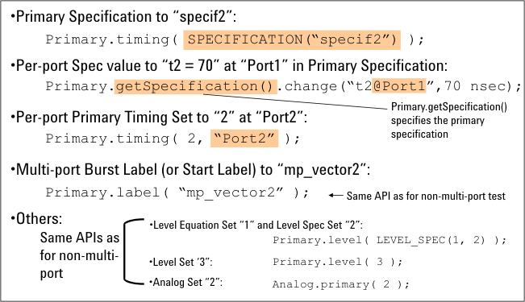

Changing Primaries and Spec Values
The following are the multi-port unique primaries specified in the Testsuite dialog window and multi-port unique spec, as described in the previous chapters:
- Specification
- Per-port timing set
- Multi-port burst label (as start label)
- Per-port timing spec values in specification

These primaries and each spec value can be changed using the test method APIs shown in the following example.

For the syntax and more information on each test method API, see Test Method Reference.
In addition to the changes shown in the above, the individual analog/routing hardware settings can be changed using the test method APIs in the same way as for the non-multi-port test.
For the start label, a normal vector label and burst label can also be specified to execute the multi-port test whose timing setup uses a specification.
In a multi-port test where a multi-port burst label is used, if the timing setup does not use any specification, use the PRIMARY_STATUS API's member functions that are the same as for the non-multi-port test in order to change the primary timing spec set, primary timing equation set, primary timing set, and the timing spec values. In this case, you must set up all ports in each of one timing spec set, timing equation set, timing set, and wavetable, then all ports must be set to the same tester period.